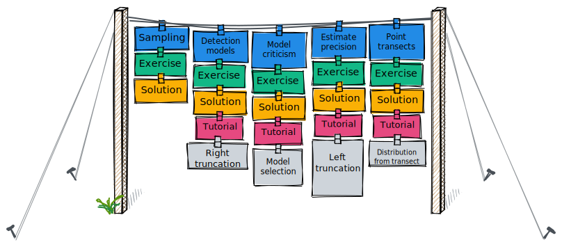
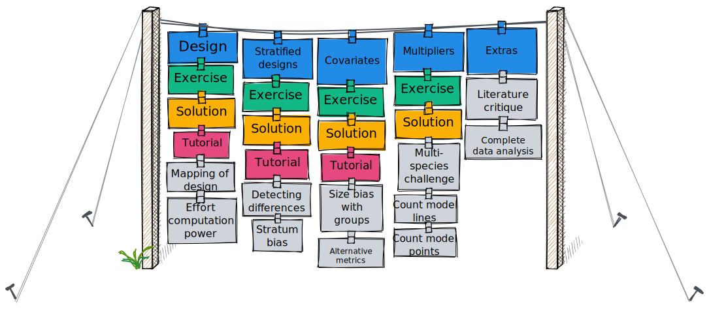

Material contained herein will acquaint you with design, collection and analysis of distance sampling data.
The materials are intended to be experiential rather than used as a reference. Exercises are paced to bring you up to speed with the fundamentals of distance sampling; how this method of population assessment differs from other forms of population sampling. This leads to the introduction of a detection function and ways to model it.
Further topics of model selection, assessing precision of population estimates and collection and analysis of point transect data round out the first half of the materials. These topics are depicted by the clothesline diagram below. At this point, you will have acquired sufficient experience to analyse basic distance sampling data.

The second half of the material (second clothesline diagram) exposes you to slightly more advanced concepts: design of distance sampling surveys, including the use of stratification. Also discussed are analytical methods associated with stratified surveys. This gives way to including predictors other than distance in modelling the detection process. Finally multipliers and methods associated with indirect animal surveys are introduced.

As well as the exercises (green) and their solutions (yellow), there are numerous supplements (grey), touching upon topics or demonstrating issues related to the analysis of distance sampling data. The supplements are not fundamental to successfully employing distance sampling methods, however, the more you understand tools such as distance sampling (via these supplements), the better you will be able to employ such methods.
Each set of exercises is accompanied by a discussion of distance sampling principles. PDFs of those discussion materials are linked in the table below (as well as linked from the landing page of each exercise).
| Topic | Date |
|---|---|
| Fundamental principles | 9 October |
| Detection functions | 10 October |
| Model criticism (selection and fit assessment) | 11 October |
| Measuring precision and controlling variance | 12 October |
| Point transect analysis and detailed example | 13 October |
| Design of distance sampling surveys | 16 October |
| Analysis of stratified surveys | 17 October |
| Covariates in the detection function | 18 October |
| Including multipliers in distance sampling analysis | 19 October |
| Field methods and summary | 20 October |